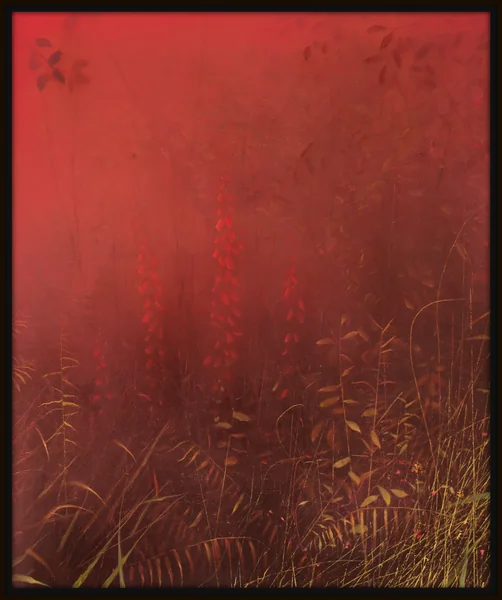
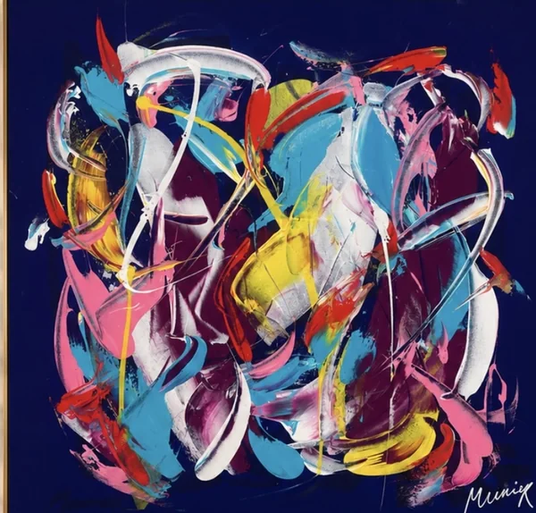

The Living Gallery · an emerging PlotArt initiative
Art belongs in the spaces where we live.
The Living Gallery brings original Irish artwork into real homes, creating new ways to discover, experience and connect with art.

Artists open to the Living Gallery
These artists have said they’d welcome conversations about showing their work in someone’s home. Every opportunity is discussed and agreed individually with the artist. Being listed is not a booking, and nothing is confirmed until it’s agreed.

Daniel ChesterPainterView gallery Naomi Taitz DuffypainterView gallery
Naomi Taitz DuffypainterView gallery Karen EbbsPainter, Colourist, Sculptor, Immersive InstallationView gallery
Karen EbbsPainter, Colourist, Sculptor, Immersive InstallationView gallery Olivia JonesVisual ArtistView gallery
Olivia JonesVisual ArtistView gallery Rasher Mark KavanaghPainterView gallery
Rasher Mark KavanaghPainterView gallery
Nick MunierPainterView gallery PIGSYMixed Media PaintingView gallery
PIGSYMixed Media PaintingView gallery Carolyn WalshPAINT, PRINT, PHOTOGRAPHYView gallery
Carolyn WalshPAINT, PRINT, PHOTOGRAPHYView gallery
How it would work
A home, not a showroom.
An artist offers work
Original pieces the artist would offer for sale, chosen with the artist. The artist would keep ownership until a work is sold.
A homeowner hosts it
The work would hang in a private home for an agreed period. Taking part would be voluntary, and the home would never be named or located.
It's seen, and enquiries go to the artist
Each installation would have its own story on PlotArt. Buyers would enquire with the artist, who handles any sale.
For homeowners
Ways you might take part.
Every role would be voluntary and agreed in writing in advance.
Art Host
Display original art
Live with original work for an agreed period.
Art Host + Fulfilment
Help with handover
Defined practical help, such as being present for a collection, on terms agreed in advance.
Art Host + Sales Partner
Help a work find its buyer
A more active role in introducing a work to potential buyers, on terms agreed in advance.
- Homes would stay private: no public access, no published address and no homeowner identity without permission.
- Insurance, transport, installation and collection would be settled before any work moves.
- Artists would keep ownership until sale.
Homeowners can register a private expression of interest with PlotNua. The Living Gallery is separate from the Founding 25: taking part is optional for artists and homeowners, and no place is guaranteed.
From PlotNua
Could your home become a gallery?
A Home for Art, PlotNua's Discovery, covers the practical questions first: what to agree with an artist, insurance and custody.
For artists
Your art. In someone’s home.
Imagine your work becoming part of someone’s everyday life.
The Living Gallery is an emerging PlotArt initiative connecting original Irish artwork with real homes, giving people an opportunity to live with art and discover the artists behind it.
We’re now welcoming expressions of interest from PlotArt artists who would like to explore having their work displayed in a home.
Taking part is entirely optional. Each potential placement would be discussed individually, with arrangements for transport, installation, care and insurance agreed before anything proceeds.
If you’re already a PlotArt artist, you can register your interest through the Opportunities section of your Artist Studio.